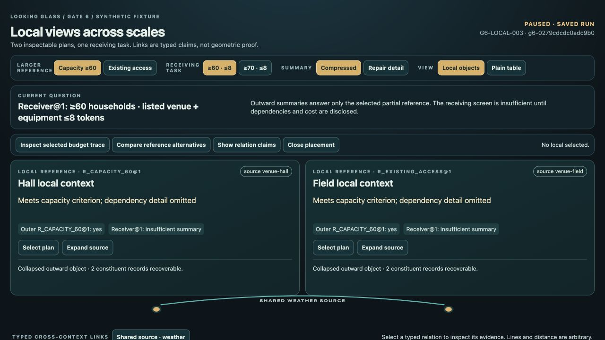
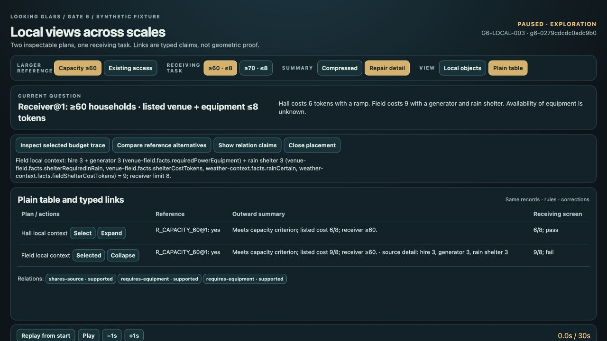
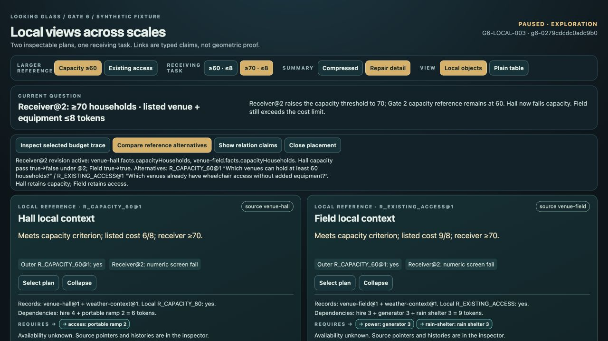
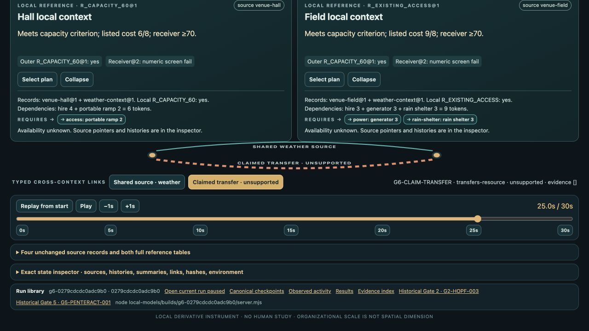

LOOKING GLASS / GATE 6 / FROZEN FIXTURE REVIEW
Recover the detail behind the summary.
Gate 6 passes as a qualified instrument result: local views preserve their sources and dependencies, and a repaired summary supports the declared receiving task. The initial compact summary fails that task. The graph and plain table use the same measured navigation actions; human understanding and a general geometry advantage remain untested.
Local preview on this Mac. Final run G6-LOCAL-003 · build g6-0279cdcdc0adc9b0.
Exact identity and preservation
| Identity | Value |
|---|---|
| Run / immutable build | G6-LOCAL-003 / g6-0279cdcdc0adc9b0 |
| Full source SHA-256 | 0279cdcdc0adc9b06790cbe877e64ff3703c3b40803b08775315e359869fe353 |
| Base revision | 56a8e6956e455155326c6b2a7fa50ef2c89e3836 |
| Runtime / renderer | Node v24.17.0; browser HTML/SVG; no package, lockfile or external assets |
| Saved replay | 30 seconds; checkpoints 0/5/10/15/20/25/30 s; opens paused |
| Prespec freeze | 2026-09-20T05:40:15.602977Z; five files, before browser trials |
Watch this
- Open the paused replay and scroll to Replay from start. The 30-second sequence changes the larger reference at 5 s, restores it at 10 s, expands and repairs at 15 s, raises the receiving threshold at 20 s, exposes alternatives/claims at 25 s, then returns to baseline at 30 s. Pause or use a checkpoint to inspect any step.
- At 0 s, compare Capacity ≥60 with Existing access, then switch back. Expand source on a local context to recover its records, dependency obligations and retained local reference.
- For the comparison, reset 0 s and choose Local objects or Plain table. Select Field, expand it, click Inspect selected budget trace, then Repair detail. Both routes reveal the same 9-token calculation. Choose ≥70 · ≤8 to inspect the attributed requirement revision.
- Use Compare reference alternatives and Show relation claims. Select Claimed transfer · unsupported: the empty evidence is explicit. Close placement moves the diagram without creating a dependency.
Expected and observed
The independent audit passes the frozen model, exact build, actual browser/activity, comparison routes, captures and preservation checks. The Hall/Field contexts and receiver requirements are synthetic Gate 6 derivatives of four unchanged Gate 2 records and two original reference definitions.
| Question | Expected | Observed | Interpretation | Unresolved / limits |
|---|---|---|---|---|
| C1 · Reference and scale round trips | Capacity→access→capacity changes Hall and Studio; expansion preserves the local account. | Actual reference switch/back and Field expand/collapse/re-expand restore exact fingerprints. Field remains yes; weather remains unmapped. All four Gate 2 records and histories stay unchanged. | The declared views reorganize and recover the same evidence. | These mappings do not establish agreement or understanding. |
| C2 · Similar summaries, different dependencies | The initial summaries cannot answer the receiver. Repair reveals Hall 6 versus Field 9 against budget 8. | Both v1 payloads return insufficient-summary. Hall hire 4 + ramp 2 = 6; Field hire 3 + generator 3 + shelter 3 = 9. v2 gives Hall numeric pass and Field budget fail. | The compression fails this task; explicit dependency/cost repair makes this narrow screen answerable. | Availability, bookings and full event feasibility remain unknown. |
| C3 · Requirement change | Receiver minimum 60 → 70 produces traced, attributed revisions without changing the capacity 60 reference. | Both venue capacity fields are traced to v3. Hall capacity pass changes true → false; Field stays true but over budget. Both now fail the numeric screen. Prior revisions and synthetic author remain inspectable. | The changed requirement reaches the relevant local evidence and outward revisions. | A fixture editor attribution is not a human decision or endorsement. |
| C4 · Reference disagreement | Keep capacity and existing-access questions, authors and mappings separately. | Both original definitions and complete tables remain available. Hall retains its capacity reference; Field retains existing access as its local reference. | Competing questions remain explicit through larger-view changes. | No averaging, consensus or social coordination was tested. |
| C5 · Unsupported link and proximity | An unsupported transfer stays outside the supported graph; close placement changes layout only. | Claim evidence is empty. Four supported relations stay intact, including shared weather source; the claimed transfer is excluded from receiver computation. Close placement preserves semantic hashes. | Inspection distinguishes a shared source from an unsupported transfer. | A line or proximity establishes no resource transfer, influence or authority. |
| N1/N2 · Plain comparison | Identical sources, rules, correction operations and starting semantic state. | Both modes: N1 three navigation actions plus one repair; N2 two navigation actions. All four endpoints pass. | The implemented routes are equivalent in counted actions and information. | No measured geometry advantage, optimal-route or human-effort claim. |
| Replay and preservation | 30-second discrete replay; seven repeatable checkpoints; historical artifacts unchanged. | Natural automatic end at 30 s; pause/step/scrub work. Seven hashes match at baseline, restore, reopen and reload. All 668 prior frozen entries match. | The exact tested local run is reproducible in this browser/build. | Pixel identity across devices and OS reduced-motion behavior were not tested. |
The comparison measured routes
| Route | Local graph | Plain table | Successful endpoint |
|---|---|---|---|
| N1: inspect Field, then repair | 3 navigation + 1 correction | 3 navigation + 1 correction | Source-backed 9-token trace and repaired result |
| N2: inspect unsupported transfer | 2 navigation | 2 navigation | Empty evidence and unsupported status |
All routes start with identical semantic state and no selected local. Two setup actions per route are separate. Graph N1 has one additional post-endpoint framing scroll, outside its successful task route. N2 selects the accessible adjacent graph relation button or plain relation row; direct SVG line picking was not tested.
The inspected plain table is more compact vertically. Graph cards emphasize local grouping but add display area and curved links. These layout observations and equal action counts establish no general usability or comprehension advantage.
Four inspected originals
Untouched final-candidate JPEGs. The capture index binds each to its run/build, original dimensions, hash and before/after observations.
The compact summary fails the receiving task.

The plain comparator exposes the same repaired evidence.

A new requirement changes the result without rewriting the old reference.

Supported evidence and an unsupported claim stay distinct.

All eight final originals
{kind=link}
{kind=link}
{kind=link}
{kind=link}
{kind=link}
{kind=link}
{kind=link}
{kind=link}
Evidence and preserved failures
The final core binds 15 files. Seven checkpoints agree at baseline, exploration restore, library reopen and reload:28 checkpoint observations. Active capture brackets 29.0–29.3 s; automatic end is recorded at 30.0 s with reason end-of-sequence. These counts exclude later presentation/handoff review.
No horizontal overflow was observed in the tested 960×720 and 1280×720 final states; console review recorded no errors. Long IDs/provenance, playback and inspectors still require vertical scrolling. Gate 2/Gate 5 library links opened the correct paused builds, verified by actual DOM state; no historical screenshots were attempted.
| Candidate | Observed failure / disposition |
|---|---|
| 001 / g6-fad414e0f36c3457 | Unsupported SVG claim remained visible while claims were closed. 20 observations and 3 originals preserved; repaired in 002. |
| 002 / g6-b31ef3d7838d10c8 | Source disclosure grew 960 px to 1136 px; relation evidence grew 1280 px to 1478 px. 119 observations and 11 originals preserved; repaired in 003. |
| 003 / g6-0279cdcdc0adc9b0 | Both overflow regressions and claim visibility pass, with the complete protocol. Final allowed revision. |
Candidate 002 also retains nested-state truncation, one response-limit read error, and three checkpoint attempts that did not reach the requested targets. They are not successful restores. Final 003 preserves full JSON-text observations and has no documented failed action calls. All 23 originals include failed candidates and one transition image.
Failed001 manifest · Failed002 manifest · Collection anomalies
Astra specified/synthesized; Sol implemented, with a separate Sol audit worker; Luna gathered primary sources; the host drove the browser and preserved evidence. These are software-agent roles. No human study, original four-agent language protocol, public deployment or OS reduced-motion emulation occurred. This typed graph of local bundle-inspired views establishes no formal fiber bundle or new dimension.
Recover the exact replay
node /Users/paul/BTC-Learning/experiments/looking-glass/local-models/builds/g6-0279cdcdc0adc9b0/server.mjs
Reopen the local paused replay after starting the snapshot. Earlier builds and runs remain preserved.
Evidence files
- Independent final audit
- Frozen specification
- Source review
- Closed actual core
- Browser observations
- Actual action trace
- Semantic activity
- Capture index
- All 23 original images inventory
- Machine-readable synthesis
The next decision
Gate 7 remains unapproved. The proposed next gate is Gate 7: unfamiliar-case interpretation and the bounded conclusion: a small frozen set of unfamiliar geometric and reference/scale questions, with a separate answer key and real “insufficient information” cases. No Gate 7 cases have been prepared or tested.
Decision for Paul: approve that named Gate 7, revise Gate 6, or pause.